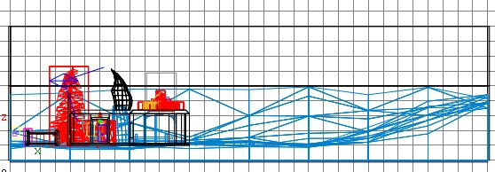

|
ET Mapping Tutorial Lesson
23 |
|
Making terrain using GtkGenSurf
|
|
|
|
|
Sooner or later you're going to want to make
some outdoor environments, and unless it's
all in a concreted area, you're going to
need to make hills, dunes, grassy paths,
snowy mounds etc.
The usual way of making brushes to make
an object doesn't really work here, so
instead people use a third party tool.
One is EasyGen, which I don't use, and
another is GtkGenSurf (a plugin included
within Radiant) which I do.
I haven't tried EasyGen so I can't
comment on it. Also there's a new
terrain-generating-kid on the block called FATE,
which looks like it will be really good when
finished. As I haven't used it I will
stick to explaining how to do things in
GtkGenSurf.
GtkGenSurf will generate an area of
terrain using lots of triangular brushes,
like the box Toblerone comes in, with one
end face the required texture and all the
rest as caulk. You
tell GtkGenSurf the area dimensions, the
required size of triangles, the textures to
be used and the contours you want and hit
the Go button: GtkGenSurf then produces the
terrain mesh, already grouped and ready for
you to slot into place.
The approach I take to making terrain is
this:
- Identify the area in the map that
needs terrain - it will need to be
rectangular although when the terrain is
generated you can always chop away the
stuff you don't want.
- Make the dimensions multiples of 256
unless the terrain area is small, in
which case you could use multiples of
128 or 64 etc. The smaller the
triangles you create, the more of them
there will be. More triangles
means nicer looking, but higher demands
on the PC to draw them. I have
always used 256 to date.
- I give GtkGenSurf a rough description
of the required geography and do the
first generation.
- If it looks roughly ok in Radiant,
compile it and go run around in ET.
- Note down the imperfections, like this
bit is too tall, that bit is too steep,
etc.
- Go back to Radiant, delete the
terrain, refine the description to
GtkGenSurf and try again.
- Repeat as many times as necessary to
get it mostly right. This might
take 20 goes or so.
- For fine tuning I drag individual
triangle vertices about in
Radiant. This is very tiresome and
to be done last.
|
 The
brushes created this way for terrain should be of Detail type, otherwise
you'd create a zillion portals in the compile. This also means that
the undulating terrain does not block program line of sight, so for example
the program will draw what's on the other side of a hill, even if a player
couldn't see it. This is why in many maps you'll find buildings
separating areas of the outdoors, so that the Structural brushes of the
buildings can intervene between the Detail brushes of the terrain and reduce
the demands on your graphics card and so improve the FPS. The
brushes created this way for terrain should be of Detail type, otherwise
you'd create a zillion portals in the compile. This also means that
the undulating terrain does not block program line of sight, so for example
the program will draw what's on the other side of a hill, even if a player
couldn't see it. This is why in many maps you'll find buildings
separating areas of the outdoors, so that the Structural brushes of the
buildings can intervene between the Detail brushes of the terrain and reduce
the demands on your graphics card and so improve the FPS.
This is why with large outdoor expanses like in Glider, 6Flags and
2tanks, I've had to be careful with the amount of cosmetic detail included,
because so much of the map will be drawn all the time.
|
|
|
|
|
|
GtkGenSurf is capable of producing terrain
according to a number of styles, but I've
found there is just one that seems to be the
most practical, and I've stuck to it for all
the terrain I've ever made.
It can base the undulations on the forms
of waves, cylinders or fractals, or from a
bitmap which specifies how the lumps and
dips should be laid out. In practice
I've found the bitmap method to be the most
useful, so that is what I'll describe here.
You can create a rectangular bitmap, ie a
graphical file of type .BMP, and by
colouring the pixels in it in varying shades
of black to white, tell GtkGenSurf how you
want the terrain to rise and fall.
The tutorial map is 2048 * 2048.
We'll make the terrain mesh size 256 units
(1 box in grid scale 9) as this will
be fine for the demonstration. 2048 /
256 is 8, so the size of the bitmap will be
8 * 8 pixels.
The tutorial map currently has lots of
stuff in the bottom left quarter, with the
rest more or less empty. We'll make
the empty 3/4 a bit hilly, and make the
bottom 1/4 flatter.
Use Paint Shop Pro or any graphics
editing software to create an 8*8
image. Make it greyscale, ie
256 shades of grey only. A coloured
BMP will not do. Fill it with black.
Black represents 0 height. White
means 255 high. The lighter the grey
the greater the corresponding height, as
interpreted by GtkGenSurf.
Make the top & right area some dappling of grey to
give some slopes there. Here is
a zoomed in image of an example 8*8 BMP.
As can be seen I've left the bottom left
corner flat for now, to avoid some of the
features we've put there disappearing into
the terrain.
Save the file as a .BMP file type, eg tutorial.bmp.
|
|
|
|
|
|
|
Run Radiant and open the tutorial map.
Select grid size 9.
Zoom/move the 2D view so you can see the
whole map.
Click Plugins/GtkGenSurf/Ground
Surface... and this window opens
up.
Make sure that:
- "Quake 3 Arena" is chosen as
the Game
- "Ground surface" is selected
for Orientation
- "From bitmap" is selected
for the Waveform
- A "Roughness" value (how
much irregularity should be introduced
to the undulations) of 50 is fine, and
pick any random seed you fancy (a
starting point for the random numbers
used - who cares really). With a
non-zero roughness it means that areas
you've specified as black, ie flat at
ground level, won't actually be
completely flat, there will still be
little curves and bumps.
- "Antialiased lines" ticked
is nice
|
|
Click on Extents tab.
We must enter the map extents, ie tell
GtkGenSurf the size of the area to create
terrain for. Seeing as we are using
the whole map and we created the map with
the lower left corner at (0,0), this is
easy: the bottom left is (0,0) and the top
right is (2048,2048).
As it happens, the Divisions default is
x=8 and y=8, which happens to be what we
want for our 8*8 terrain mesh. If the
map had been 4096*4096 and the box size were
still 256, you'd enter 16 and 16 here.
|
|
Click on Bitmap tab.
Browse to the BMP file you created.
Don't worry about the map color boxes, they
can be used to scale the undulations to
increase the height range above 256, but we
don't need that now.
Click the Preview box. This
will show you what the geography will look
like.
|
|
GtkGenSurf
has some quirks and bugs. One bug is that if you run it again, even
though the Preview box is ticked, it won't open the Preview window - you
have to un-tick it and tick it again.
|
|
|
You can view the mesh from different angles by changing the Elevation and
Azimuth of the viewpoint. Remember 30/30 is the default view.
|
|
Another
oddity is that the 3D preview isn't easily matched to the top/bottom of your
map. You'll have all sorts of fun trying to guess which bits of the
terrain will go in which parts of your map. With a simple 8*8 where
the terrain is obvious, it's ok. When the terrain is 80*80 with lots
of bumps and valleys, it becomes less obvious. This is because of
another quirk which you'll see next as we get the opportunity to fine tune any
of the terrain grid intersections using the Fix Points feature.
|
|
|
By the way, I generally place the GtkGensurf window top left on my screen and put the
preview window next to it, and then make the preview window as large as
possible. This doesn't matter at 8*8, but it will at 80*80 or similar.
Click the Texture tab.
The Surface texture is the main texture that GtkGenSurf will use when
it makes the terrain. You can change this to the texture you want.
While I'm making the Ludendorff map I am using some grassy dirt texture.
You should pick an organic texture, something like grass, dirt, snow, gravel,
sand etc. There are some good grassy choices in the textures/temperate_sd
set, so for now I suggest you choose master_grass_dirt3. There is no
"browse" option, so you have to type it in. Don't put .tga or
.jpg at the end, just give the texture name.
The Other texture should be left as caulk.
The Steep texture is the texture to use for steep angles, defined as 60 degrees or more unless you change it. You would make this
either the same as the main surface, or if you wanted say hills to be grassy
mainly but rocky on the steep slopes, you'd give a rocky texture here.
Make sure the "Use detail brushes" box is ticked.
|
|
Yet
another bug is that often GtkGenSurf will not use the texture you
specified. It tends to get it right more often if the texture is already in use
somewhere in your map, but this isn't guaranteed. Once it starts to
get it wrong it's quite tiresome trying to convince it to use the right
texture. It may also forget
the texture used when you save an INI file to record the settings you are
using. You may have to go into the INI file and change it by hand, as
explained later. Sometimes closing Radiant and starting it again will
help GtkGenSurf get its act together.
|
|
|
Click the Fix Points tab.
The main window of interest is the preview window.
We can change the height of any point (except the yellow ones) by clicking on
an intersection, and then entering the required height value. If you enter
a value in the Range Affected box, nearby points will be adjusted too. As
the adjacent points are 256 units away, you'd enter say 512 to affect your 2
nearest neighbours in all directions.
Click on a point and increase the height value so you can see the effect of
your adjustment. I have made an exaggerated adjustment here to make it
obvious.
I don't really want this spike, so I can release it by clicking Free
and it will return to its original value.
What you will find is that it is hard to equate where you click on the grid
to where in the terrain you are actually affecting. This is a pain.
Sometimes I flip the image upside down with the Elevation and spin it around
with the Azimuth to get the left and rights to match up - but then the top and
bottom are reversed. :(
It's trial and error and you must pick the view orientation that makes the
most sense to you.
I'll repeat the point adjustment, but this time with a Range of 512.
You'll see how the neighbouring points are dragged upward. This is neat
and goes some way to compensating for the aggro you'll have in trying to work
out which point is which...
You can adjust multiple points simultaneously by ctrl+clicking on the grid,
and you can do rectangular ranges by shift+clicking.
For now we'll just leave it to the default values. If you've made the
grid a mess, click Free All.
|
Nearly done. To record all these settings so you don't start from scratch
next time, you should now click Save As...
and save your settings as tutorial.ini in the Radiant folder.
|
Yet
another bug is sometimes the Save As dialogue box will have gibberish in the
"Save as type" box. Ignore it and just type the name of the
file you want to save to.
|
|
|
You are now ready to create the terrain. Click the Ok button
on the GtkGenSurf window. It will create the brushes, being 2 triangles
per box, already grouped (so they show as blue triangles) at the (0,0,0) co-ord.

Your view should look something like this:
|
|
We have new terrain and the old floor overlapping. Either we'll need to
move everything up a bit, or move the old floor down. We can't just delete
the old floor because it forms part of the structural boundary of the map.
In general you'll make maps that are totally enclosed in hull caulk cubes, with
all 6 faces of the surrounding brushes given hull caulk, so that you are free to
create/delete anything inside it without worrying that you are making a hole
into the void.
For the sake of simplicity we'll just move the floor down a notch. Get
a 2D side view. Change to grid size 7. Select the old floor brush
and move it down one notch. Click on the hull_caulk texture in the
textures window to give the whole brush that texture - we don't need it to be
drawn as snow any more.
Press ESC. Select all 4 of the surrounding wall brushes, and extend
them down one notch to meet the bottom hull_caulk brush, thus making the solid
surrounding cube again.
Press ESC. Your view should now look something like this:

If you generally don't like how the terrain has come out, rather than
specific detailed parts which we could fix by hand, select and delete the
terrain group and go back to GtkGenSurf. It will still have your details
so you can just Fix Points differently and try again.
If though you have exited Radiant, GtkGenSurf will not know your terrain
settings, so you will first have to use GtkGenSurf's Open... button and
tell it to open "tutorial.ini".
An important detail to note is that there is a chunk of terrain inside the
building.
It's at this point that it starts to become clear why we have taken such
trouble to make our buildings line up along big grid lines where possible.
Choose grid size 9 and get the overhead 2D and you can see the terrain triangles
that fall within the building. There are 6 of them.
Select all 6 triangles in the 3D view, by first hiding the intervening floor
brushes, and delete them. Press shift+H to reveal the floor brushes again
and it should look like this:
This will have revealed some gaps around the bottom of the building, as shown
here:
The better solution to all this is to manually adjust the triangles in
Radiant, but we'll come to that in the next lesson. For now just select
all the floor brushes again and extend them downwards in the 2D side view using
grid scale 5. This will still leave a problem with the door, because the
terrain comes up the door a bit, and you'll see its caulk when opening the door
from the inside. We'll fix all this in the next lesson.
Save, compile and run around in your new hilly environment.
By the way, when taking screenshots from ET you usually have to increase the
brightness (eg 40%) and contrast (eg 20%) otherwise the JPG looks too gloomy.
Whether or not you can plant landmines will depend on the texture you
used. If it's a shader with landmines enabled, you'll be able to plant
landmines.
|
A
neat way to see if a texture is actually a shader (ie there is a bit of
script-like information for it which gives it properties instead of just
being a picture) is to shift+click on the texture of interest in the
textures window. Make sure you have pressed ESC first or you will
apply the texture to any selected brushes/faces.
If the image is a plain texture, Radiant will report something like:
ERROR: textures/egypt_floor_sd/block-16sq is not a shader, it's a texture.
If it's a shader, ie there is an entry for it in a shader file, Radiant
will open the shader file using Wordpad or whatever you have associated with
.shader file types. Find the texture name in there and see if "surfaceparm
landmine" is given under it. If it is, you can plant landmines on
faces with this texture.
|
|
|
Next lesson
|
|
|
|
|